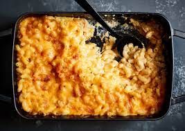

Baked Macaroni and Cheese

Baked Macaroni and Cheese
- 200 g Macaroni
- 1 cup Parmesan Cheese
- Tomato sauce
- Pumpkin seeds
- Salt, Pepper, Basil
- Olive Oil
- Boil the macaroni in salted water
- Drain; mix with olive oil salt, pepper and basil
- Add tomato sauce
- Add pumpkin seeds
- Add the grated parmesan cheese
- Stir everything well
- Bake in the oven in a glass dish for 20 min at 200 degrees